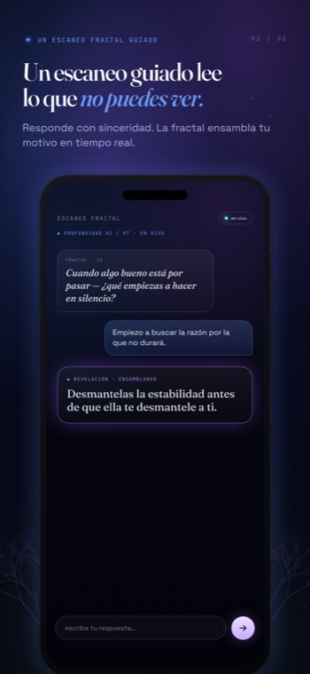
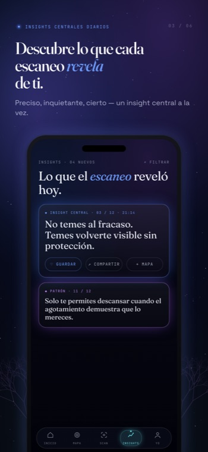

Una situación. Unos minutos. Un solo hilo, seguido hasta el fondo — hasta que la estructura que dirige tu vida en silencio se convierte en algo que por fin puedes ver.
Sin cuenta · solo texto · sin rastreo
No rellenas formularios ni eliges entre menús. Tienes una conversación breve y precisa con un espejo que solo sigue un hilo.
Elige una situación que se repite una y otra vez — la discusión, la huida, el silencio — y te frena en silencio.
Cuéntale un momento real y reciente en que ocurrió. Sin teoría, sin diagnóstico — solo tus propias palabras.
Una IA en vivo hace una pregunta precisa cada vez, sacando a la luz el detonante, tu reacción, la emoción y el precio.
El bucle cristaliza en una sola frase-motivo — y la lógica oculta que lo ha estado manteniendo en marcha.

Esto no es un chatbot que te suelta un discurso. Es un espejo. Sereno y preciso, lee lo que escribiste y te lo devuelve — y luego hace la única pregunta que baja una capa más.
Nunca te inunda de opciones. Nunca moraliza ni reparte consejos. Hace una sola cosa, espera, y sigue tu respuesta — desestabilizando del modo más suave, porque solo nombra lo que ya está ahí.

Cuando el hilo se completa, el espejo devuelve una única revelación nítida — no un feed interminable por el que deslizarte. Pone en una sola frase una repetición que llevabas años sintiendo pero nunca habías nombrado del todo.
Ves el motivo fractal, la lógica oculta que hay debajo, la inversión que afloja su agarre, y dónde se sitúa en tu mapa personal — la estructura bajo las relaciones, el dinero, el trabajo y el cuerpo.
Fractalogie nunca salta ni mezcla pasos. Sigue un bucle a través de cinco movimientos — desde sus cuatro esquinas hasta la identidad que lo mantiene en su sitio.
Detonante, reacción, emoción, precio — las cuatro esquinas del bucle, sacadas a la luz con tus propias palabras y no impuestas desde fuera.
De qué te protege el patrón en silencio, y el riesgo emocional que te ha estado ayudando a evitar todo este tiempo.
«No es el miedo lo que te protege del fracaso — es el fracaso lo que te protege de ser visto.» La frase que da la vuelta al bucle del revés.
La misma estructura, hallada de nuevo en otro ámbito. No son muchos problemas separados — uno solo, que se repite, a otra escala.
«Soy alguien que ___.» La autodefinición que todo el bucle se ha organizado, todo este tiempo, para proteger.
Fractalogie lee palabras, no rostros — no hay cámara, ni micrófono, ni rastreo, ni cuenta requerida para empezar. Tu primer escaneo arranca en cuanto tú lo haces.
Inicia sesión solo si quieres que tu mapa se sincronice entre dispositivos. En cualquier caso, no vendemos nada ni usamos rastreadores, y puedes borrarlo todo con un solo toque.
Fractalogie es una herramienta de autorreflexión. Sus resultados son reflexiones interpretativas, no hechos, diagnósticos ni consejo médico, psicológico o profesional — y no sustituyen a un profesional cualificado. Si estás pasando por un momento de angustia, contacta con un profesional o con el número de emergencias de tu zona.
Tu primer escaneo es gratis — sin cuenta, sin rastreo, sin ruido. Mira cómo una única situación recurrente revela la estructura que hay debajo.
Ver precios →